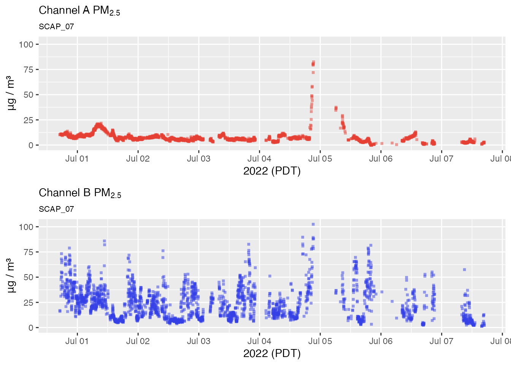
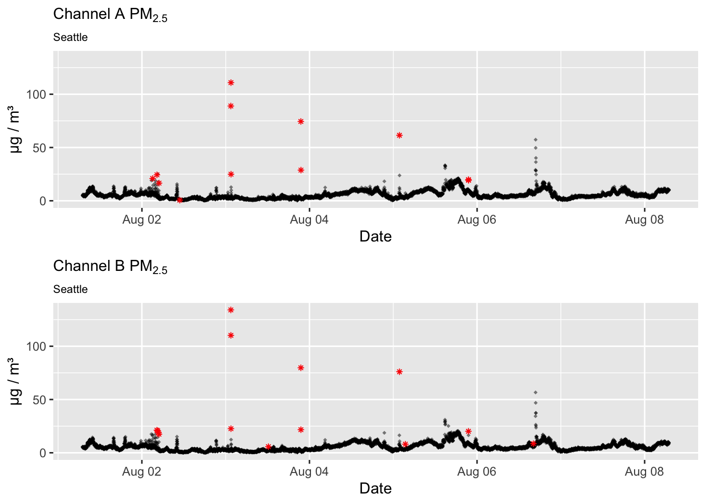
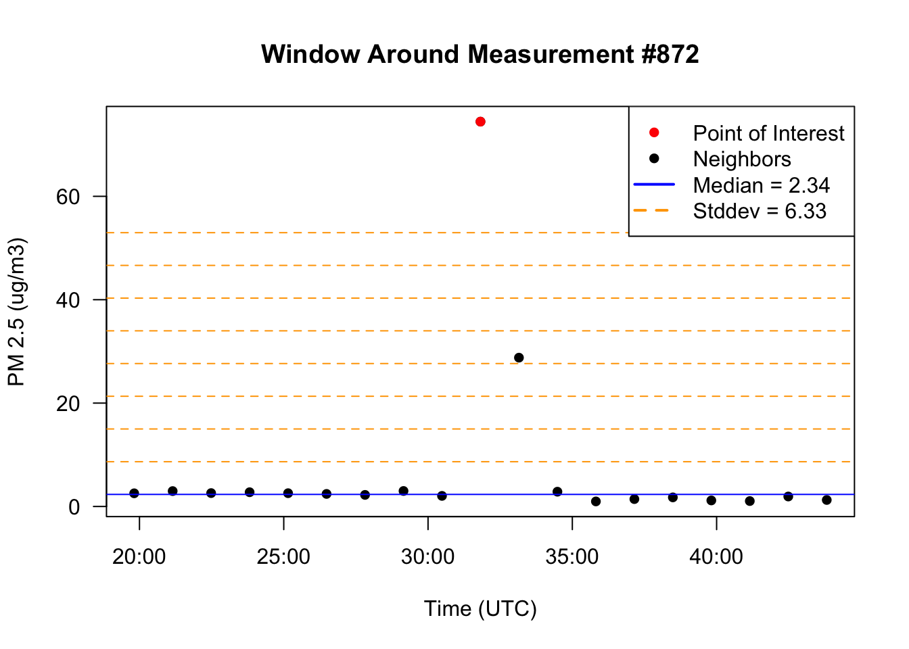
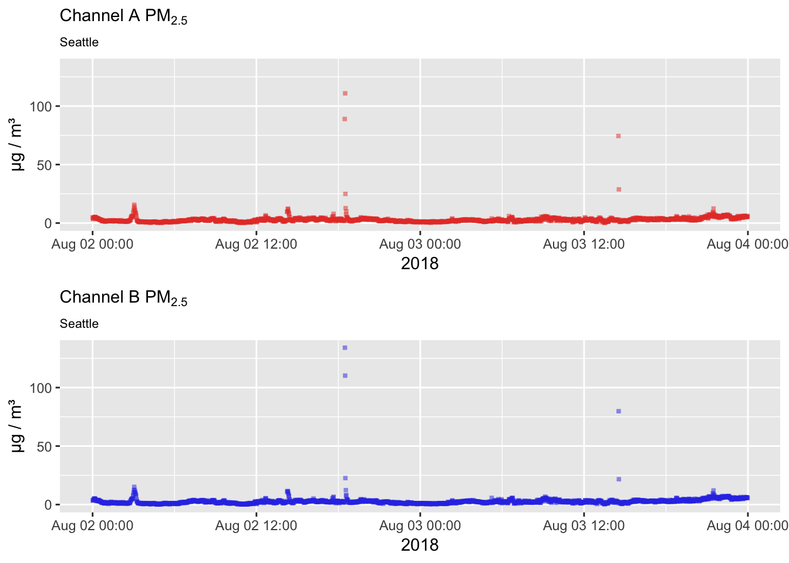

Outlier Detection with the Hampel Filter
Mazama Science
2019-04-19
Source:vignettes/outlier_detection.Rmd
outlier_detection.RmdThis vignette explores the use of the pat_outliers() function to identify and potentially replace timeseries outliers in the data and the underlying algorithm used that makes this possible.
A quick example
Raw PurpleAir PM 2.5 time series data will occasionally contain visible outliers – measurements which are not plausibly explained by atmospheric processes and thus likely due to sensor error. Some monitors are noisier than others, but a week’s worth of data from any sensor will likely contain some of these electrical glitches.
Using example data released with the package, let’s have a look at the raw PM2.5 measurements for a Seattle based sensor during the first week of August, 2018. We will use the sampleSize = 1e6 argument to prevent sub sampling of the data that might leave out some outliers. (We’re willing to wait for the plot so we can see everything!)
pat <-
AirSensor::example_pat %>%
pat_filterDate("2018-08-01","2018-08-07")
pat_multiplot(pat, plottype = "pm25", sampleSize = 1e6)
We definitely see a few individual data points that look like outliers while other momentarily elevated levels consist of multiple measurements and are more likely to represent valid measurements.
Let’s see if our outlier detector can correctly identify outliers without flagging the more believable measurements:

An excellent result!
The Hampel Filter
The seismicRoll R package was developed for use with high resolution seismology waveforms. It provides high performance functions for a variety of signal processing algorithms including the Hampel Filter.
The pat_outlier() function uses the Hampel filter to identify outliers. The Hampel filter is a robust outlier detector that uses Median Absolute Deviation. For each point, a median and standard deviation are calculated using all neighboring values within a window of size windowSize. If the point of interest lies multiple standard deviations from the median it is flagged as an outlier. As the Hampel value increases, the more likely it is that the value is an outlier. However, there is no universally appropriate window size or threshold to use. It’s up to us to come up with our own window size and threshold based on the characteristics of our time series.
Detailed discussion of the algorithm is available at:
- Hampel Filter – Matlab function documentation
- Generalized Hampel Filter – Journal on Advances in Signal Processing
Window width and detection threshold
The pat_outliers() function provides two parameters to control outlier detection:
-
windowSize– number of measurements to include in a window -
thresholdMin– number of std. dev. units above which a measurement is considered an outlier
The default setting of windowSize = 23 means that 23 samples from a single channel become the population from which the median and standard deviation are calculated. Each Purple Air channel makes a measurement approximately every 80 seconds so the temporal window is 23 * 80 sec or approximately 30 minutes. This seems like a reasonable period of time over which to evaluate PM2.5 measurements. It is long enough to capture significant change making it more likely we will only identify true outliers.
The default setting for the detection threshold thresholdMin = 8 means that the sample at the center of the rolling window must have a value at least 8 standard deviation units away from the window median to be flagged as an outlier.
To explain how this works, we will focus on a single day’s worth of data and use base R functionality to zoom in and visually explore the algorithm. We start with a visual inspection of the data:
oneDayData <-
pat %>%
pat_filterDate("2018-08-03", days = 1) %>%
pat_extractData()
# Visually inspect for outliers
plot(oneDayData$datetime, oneDayData$pm25_A,
xlab = "Aug 1, 21018", ylab = "ug/m3", las = 1)
title("A channel PM2.5")We definitely have what looks to the eye like outliers so let’s use the seismicRoll::findOutliers() function to figure out exactly where they are:
## [1] 872 874The following example explains the outlier detection process with a single window centered on the outlier at index 872:
# Set example point, neighbors, median, and window
windowWidth <- 23
halfWidth <- round(23/2)
exampleIndex <- 872
windowStart <- as.integer(exampleIndex - halfWidth)
windowEnd <- as.integer(exampleIndex + halfWidth)
exampleNeighbors <- c(windowStart:(exampleIndex - 1), (exampleIndex + 1):windowEnd)
windowMedian <- median(oneDayData$pm25_A[exampleNeighbors], na.rm = TRUE)
windowSd <- sd(oneDayData$pm25_A[exampleNeighbors], na.rm = TRUE)
# Plot the window around the example point along with the window median
plot(oneDayData$datetime_A[windowStart:windowEnd],
oneDayData$pm25_A[windowStart:windowEnd],
col = "black", pch = 16, cex = 1,
main = paste0("Window Around Measurement #", exampleIndex),
las = 1, xlab = "Time (UTC)", ylab = "PM 2.5 (ug/m3)")
points(oneDayData$datetime_A[exampleIndex],
oneDayData$pm25_A[exampleIndex],
col = "red", pch = 16, cex = 1)
# Add lines for the median and several standard deviations beyond
abline(h = windowMedian, col = "blue")
abline(h = windowMedian + 1:8 * windowSd,
lty = "dashed", col = "orange")
# Add a legend
legend(x = "topright",
legend = c("Point of Interest",
"Neighbors",
paste0("Median = ", round(windowMedian,2)),
paste0("Stddev = ", round(windowSd,2))),
col = c("red", "black", "blue", "orange"),
lwd = c(1,1,2,2),
lty = c(NA, NA, "solid", "dashed"),
pch = c(16, 16, NA, NA))
The example code above can be applied to any outliers identified with seismicRoll::findOutliers() to gain a better understanding of why each point is flagged as an outlier. Remember that this is a “rolling” algorithm and that the windowMedian and windowSd are recalculated for every single point in the timeseries.
If an outlier is detected even when it visually appears to lie on top of other data points it just means that the window-local median and standard deviation are very small, thus requiring much smaller deviations from the median to be flagged as an outlier.
Replacing values
The pat_outlier() function allows you to replace detected outliers with the windowMedian, resulting in a cleaner timeseries with likely electrical glitches removed. The following plots demonstrate replacement of outliers.
No outlier replacement
pat2Day <-
pat_filterDate(pat, "2018-08-02", days = 2)
# No outlier replacement
pat2Day %>% pat_multiplot("pm25", sampleSize = 1e6)